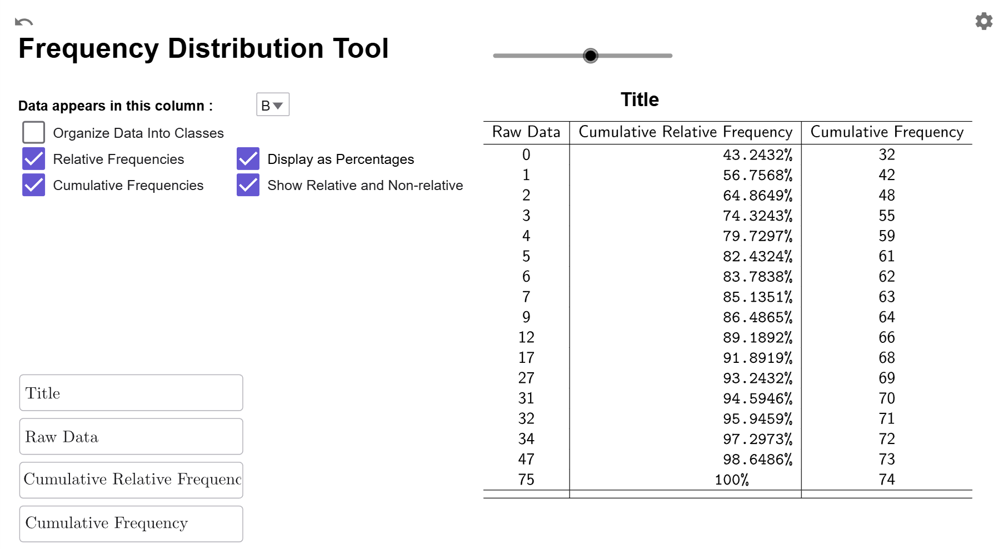

Creating Cumulative Frequency Distributions
Another important concept related to frequency is cumulative frequency, which keeps a running total of frequencies up to a specific value or class. This provides insight into how data accumulates over a specific range of values, and is fundamental in understanding ideas such as median, quartiles, interquartile ranges, computing area under the uniform, normal, and student T curves. By synthesizing raw data into meaningful patterns, cumulative frequency serves as a stepping stone to deeper statistical concepts, emphasizing the relationship between individual data points and their overall context within a dataset.
Cumulative Frequency
What is Cumulative Frequency?
Cumulative Frequency is the number of data points that are less than or equal to some given number (not necessarily in the data set).
What is a Cumulative Frequency Distribution?
A cumulative frequency distribution is a table that lists either the raw data or classes in the first column and the corresponding cumulative frequencies in the second column.
How do I compute Cumulative Frequency?
Let's turn to our Frequency Distribution about tornado deaths in Tennessee from
in
How to Create Frequency
Distributions:
Suppose we are interested in the number of
years
with 3 or
fewer deaths. From the frequency distribution, 32 years had 0 deaths, 10 years
had 1
death,
6 years had 2 deaths, and 7 years had 3 deaths. Adding up the number of years
gives
\[32+10+6+7=55,\] so the cumulative frequency for \(3\) is 55. Therefore, 55
years
between
1950 and 2023 had 3 or fewer tornado-related deaths in Tennessee.
While it is good to have an idea of how to compute a cumulative frequency, the multiple manual calculations needed for a cumulative frequency distribution increases the likelihood of a calculation error. In our next example, we will see how to use our GeoGebra tool to create a cumulative frequency distribution.
Example
For the data from in How to Create Frequency Distributions, create
a
cumulative frequency distribution for the raw data.
Solution
Load your data into GeoGeobra (see of How to Create Frequency Distributions if you need a refresher).
While we can create a relative frequency distribution for the classes, as a first example, it is easier to work with and interpret the rate data. So, we are just going to click on the Cumulative Frequency Checkbox to change the second column from frequencies to cumulative frequencies.

Interpretation
The Raw Data column gives all the unique values of the raw data, listed from smallest to largest. The Cumulative Frequency column tells us the number of years where the death total for the year is less than or equal to the value in the Data column. For example, for \(x=17\) deaths, the cumulative frequency of 68 indicates that, between 1950 and 2023, there were 68 years in which the number of deaths caused by tornadoes in Tennessee was 17 or fewer.
$$\tag*{\(\blacksquare\)}$$
Relative Cumulative Frequency
Relative cumulative frequency, which integrates the concepts of relative frequency and cumulative frequency, offers a powerful tool for understanding data distributions in a statistical context. It represents the percentage of data points at or below a specific value. When we study area under the normal curve later in this course, we will use both cumulative frequencies and relative cumulative frequencies.
What is Relative Cumulative Frequency?
Relative Cumulative Frequency is the percentage of data points that are less than or equal to some given number (not necessarily in the data set). As with relative frequency, we will always express the percentage as a decimal, such as \(0.2934\) instead of \(29.34\)%. Using percentages instead of decimals can cause errors in many of the formulas we will use in this course, as they require values to be expressed as decimals for accurate computation. As a formula, we can express this as \[\text{relative cumulative frequency}=\dfrac{\text{cumulative frequency}}{{n}},\] where \(n\) is the number of data points.
What is a Relative Cumulative Frequency Distribution?
A relative cumulative frequency distribution is a table that lists either the raw data or classes in the first column and the corresponding relative cumulative frequencies in the second column.
How do I Compute a Relative Cumulative Frequency?
Let's consider our Cumulative Frequency Distribution from :
One useful feature of a cumulative frequency
distribution
is that the last row provides the total number of data points, which in this
case is
74.
Now, let’s pick a data point, such as 5. To calculate the relative cumulative
frequency,
divide its cumulative frequency by the total number of data points:
\[\dfrac{{61}}{{74}}\approx 0.8243.\] This means that \(82.43\%\) of the years
had 5
or
fewer deaths. As with relative frequency, we always round to four decimal
places.
While it is good to have an idea of how to compute a relative cumulative frequency, the multiple manual calculations needed for a cumulative frequency distribution increases the likelihood of a calculation error. In our next example, we will see how to use our GeoGebra tool to create a cumulative frequency distribution.
Example
For the data from , create a cumulative relative frequency distribution for the raw data.
Solution
For the data from in How to Create Frequency Distributions,
If you are continuing from , the Frequency Distribution Tool should like this:
We just need to make sure the Relative Frequencies checkbox is also checked, and it will change the cumulative frequencies column to relative cumulative frequencies. If you have done this correctly, your tool should look like this:

Interpretation
The Raw Data column gives all the unique values of the raw data, listed from smallest to largest. The Relative Cumulative Frequency column tells us the percentage of years where the death total for the year is less than or equal to the value in the Data column. For example, for \(x=17\) deaths, the relative cumulative frequency of \(0.9189\) indicates that \(91.89%\) of the years between 1950 and 2023 had 17 or fewer deaths.
$$\tag*{\(\blacksquare\)}$$
Just like relative frequencies, cumulative relative frequencies can be displayed as percentages or side-by-side with cumulative frequencies.
Relative Frequency Distribution Options
Convert To Percentage
If you click on the Display as Percentages Checkbox, it will convert the relative cumulative frequencies to cumulative percentages.

Compare Frequency to Relative Frequency
If you click on the Show Relative and Non-Relative Checkbox, a third column will be added showing the original cumulative frequencies so you can have the cumulative frequency and relative cumulative frequency data side-by-side.

Both Options
You can also select both options at once to compare cumulative percentages to cumulative frequencies.
